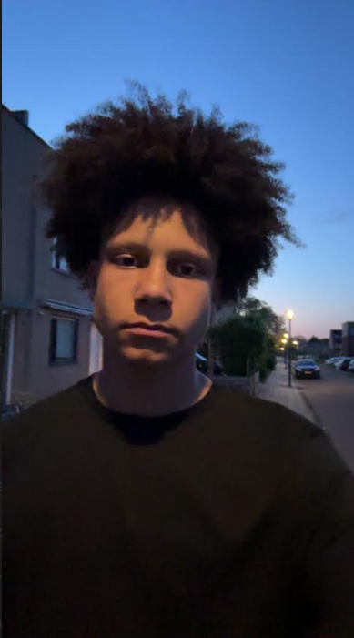

Hallo ik ben Tyson Jarvis. Ik ben 17 jaar oud en doe nu stage bij ASRR, voor mijn opleiding software development. Mijn hobbies zijn: films en series kijken, gamen en afspreken met vrienden. Ik heb 2 huidziektes genaamd vitiligo en alopecia. vitiligo is een pigment ziekte die zorgt dat je geen pigment hebt op de plekken waar je vitiligo hebt. Ik heb het gelukkig alleen op mijn rechter kuit maar er zijn mensen die het hebben over hun hele lichaam. Alopecia is een haaruitval ziekte waardoor je haar gaat uitvallen. Mijn alopecia begon ongeveer toen ik 10 was met kleine kale plekken, maar die plekken werden steeds meer en groter waardoor ik uiteindelijk kaal ging. Na een paar jaar werden die plekken steeds kleiner en groeide mijn haar weer terug. Hiernaast zie je een foto van mezelf om te zien hoe mijn haar er nu uit ziet
| Anime | character |
|---|---|
| Berserk | Guts |
| Jojos Bizarre Adventure | Jotaro Kujoh |
| Vindland Saga | Thorfinn |
Al sinds ik jong was, heb ik altijd genoten van films kijken, vooral superheldenfilms. De laatste tijd begin ik ook horrorfilms leuk te vinden. Naast films heb ik ook veel series gekeken. Toen ik jonger was, keek ik veel tekenfilms, maar dat veranderde langzaam in anime.
Ik heb een paar van mijn favorite animes en karrakters uit die animes genoemd om te laten zien watvoor animes ik leuk vind. (Niet in volgorde).
Ik kijk all mijn animes op een website genaamd 9animetv. Deze website heeft vrijwel alle animes die je ooit zou willen zien, en meer. Als je een anime wilt aanbevelen wilt hebben, help ik je graag. Vul je naam en e-mailadres in en ik probeer contact met je op te nemen.